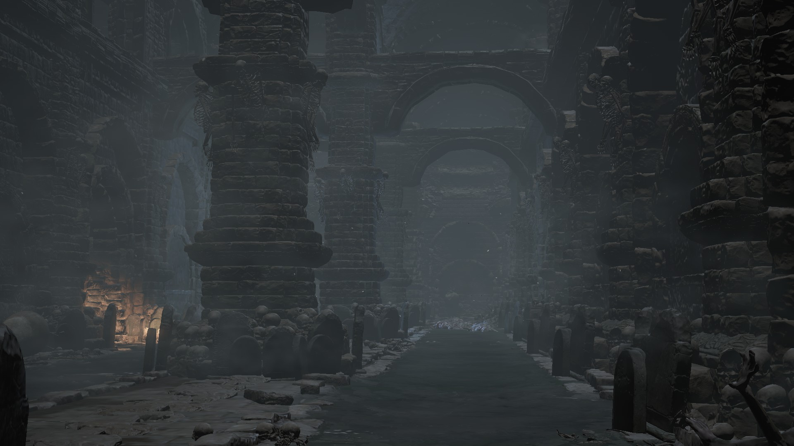
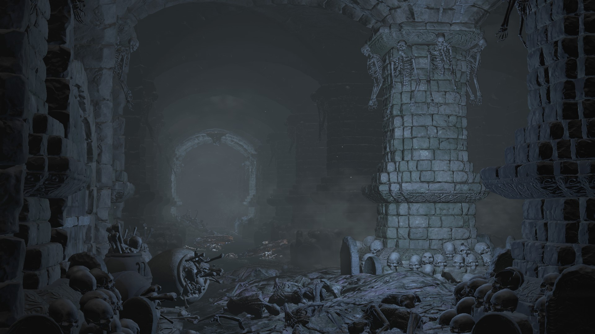
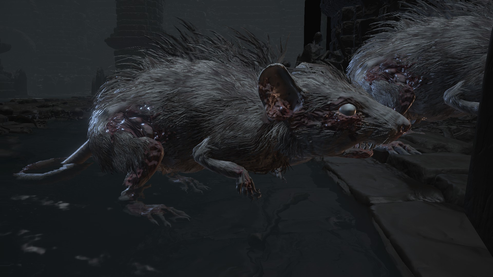
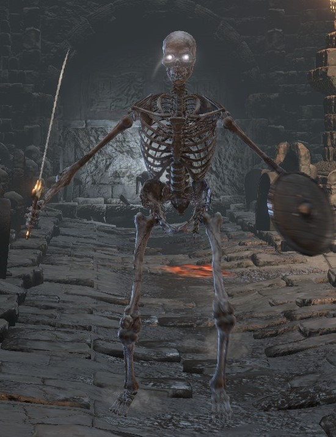
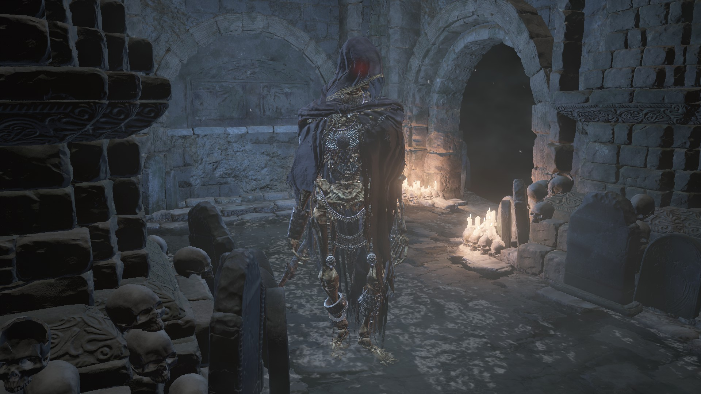
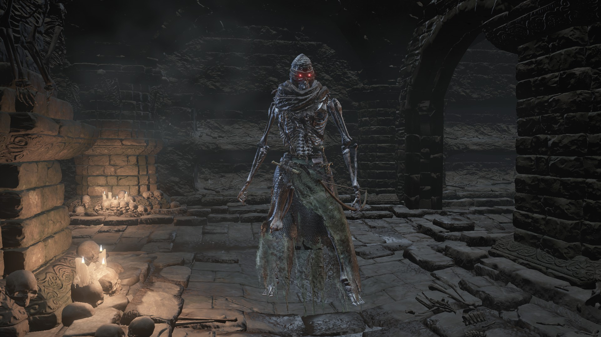

-Catacombs Of Carthus-
{kind=link}
The Catacombs of Carthus. Catacombs meaning an underground cemetery and Carthus, meaning “New City”, which is not the case. This is actually the “underground cemetery” of the people of Carthus. Long before these great tombs of skeletons were involved, there was a great city on top of sand and desert called The Great City of Carthus. To make sense of the timeline, Carthus was built and ruled over during the early stages of the Age of Fire. The Army of Carthus were known for being ruthless and merciless warriors who would win any battle by any means necessary. Knights of Lothric who used any kind of sorcery who be deemed dishonorable, but the Carthus Warriors used it greatly in their battles and were constantly investing research into learning pyromancy and spells to give them the edge in battle.
{kind=link}
Research went heavily into the spells of immortality or reanimation which is only speculation but it plays into a lot of other theories. When the Abyss and DarkWraiths came for all of life, Carthus was invaded and they destroyed the army of Carthus as well as the city. The only ones left alive were the Gravetenders who were hidden underground managing and protecting the dead. The tomb was not nearly the same place as it soon became. The Grave Tenders took all the bodies of the dead and kept them in the tombs because it was their job. However, I believe many of the soldiers who participated in the miracle or curse of immortality, over time, became reanimated inside the tombs riddled with bones and skulls of the people of Carthus, making them almost completely undead.
-Enemies of the Catacombs-
{kind=link}
-Rats-
Scattered around the Catacombs are deadly rats. There are not many, but these rats travel and packs making them very overwhelming to evade and kill. The smaller rats are easy to kill but very deadly with fast attacks.
-Skeletons-
{kind=link}
These armed skeletons are the pawns in a chess game, there’s a lot more of them but they are less dangerous. On the battle ground they were much more expendable, just like pawns in chess.
-Assassin Skeleton-
{kind=link}
The assassin skeleton wields the weapons to silently kill you from up close, or kill you from a range. In close combat, they have the ability to go invisible for a short period to attack you and can also throw daggers that will make you bleed to death, making them very capable assassins.
-Warrior Skeleton-
{kind=link}
The soldiers fighting on the front lines were the warriors. They wield bows for far range combat and a Carthus Curved Sword for hand-to-hand combat. Fire pyromancy would often be applied to these blades for intimidation and more damage.